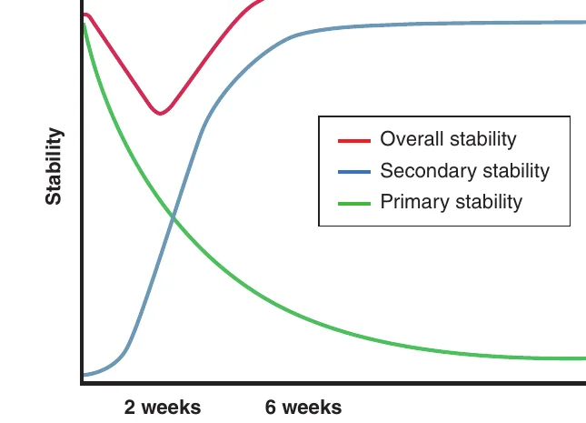
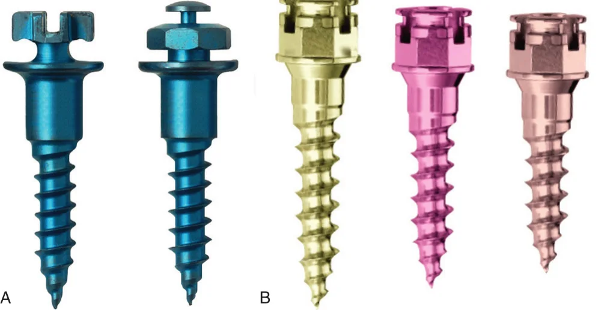

نسخه استخراجشده؛ ترجمه یا تأیید علمی انجام نشده است. وضعیت: captured
هر نیرویی که به دندان وارد میکنی، نیروی واکنشی برابری به واحد پشتیبان برمیگرداند. تمام هنر انکوریج کلاسیک، توزیع همین نیروی واکنشی بود تا اثرش کمینه شود.
مینیاسکرو معادله را عوض میکند. چون PDL ندارد، مسیر بیولوژیک حرکت دندانی در آن وجود ندارد و زیر نیروی ارتودنتیک جابهجا نمیشود.
نتیجه: نیروی واکنشی به استخوان میرود، نه به دندانهای دیگر. این یعنی انکوریج مطلق — چیزی که پیش از آن با هیچ مکانیک داخلدهانی به دست نمیآمد.
ایمپلنت استئواینتگرهشده هم PDL ندارد و به همین دلیل میتواند نقش لنگرگاه اسکلتی را بازی کند.
و همین، حرکاتی را ممکن کرد که قبلاً یا نشدنی بودند یا به جراحی نیاز داشتند.
یک تفاوت مهم با ایمپلنت: مینیاسکرو برای استئواینتگره شدن طراحی نشده. پایداری اولیهی آن مکانیکی است — از تماس فشرده با استخوان کورتیکال میآید.
پیامد اول: میتوان بلافاصله بارگذاری کرد و نیازی به دورهی انتظار نیست.
پیامد دوم: میتوان آن را در پایان درمان بهراحتی خارج کرد.
پیامد سوم و مهمترین: چون پایداری از کورتکس میآید، ضخامت و کیفیت استخوان کورتیکال عامل تعیینکنندهی موفقیت است — نه طول پیچ.
به همین دلیل نواحی با کورتکس ضخیمتر، میزان موفقیت بالاتری دارند.

بیشتر شکستهای مینیاسکرو به انتخاب نادرست محل برمیگردد.
سه خطر: برخورد با ریشه — که هم شکست پیچ را در پی دارد و هم آسیب به دندان؛ کورتکس نازک — که پایداری اولیه نمیدهد؛ و کارگذاری در مخاط متحرک — که التهاب مزمن و شل شدن تدریجی میسازد.
پیشگیری ساده است: ارزیابی تصویری فاصلهی بینریشهای پیش از کارگذاری، انتخاب ناحیهای با لثهی چسبنده، و توجه به زاویهی ورود.
و اگر پیچ در همان هفتههای اول شل شد، بیش از آنکه به بیمار مربوط باشد، به محل و تکنیک مربوط است.
